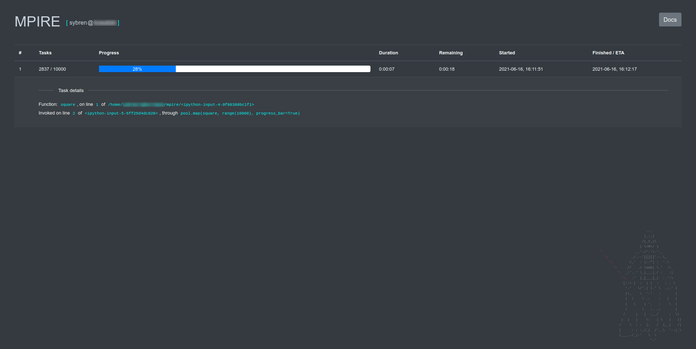
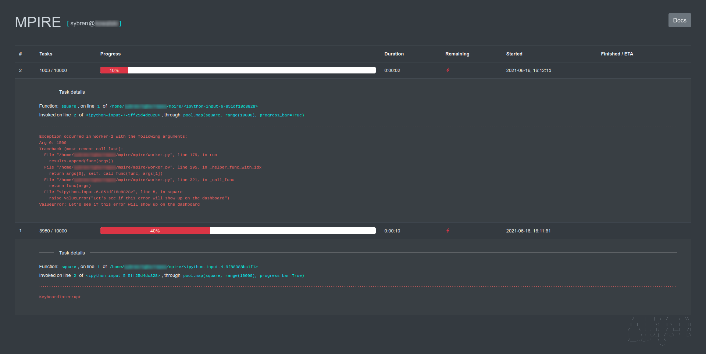
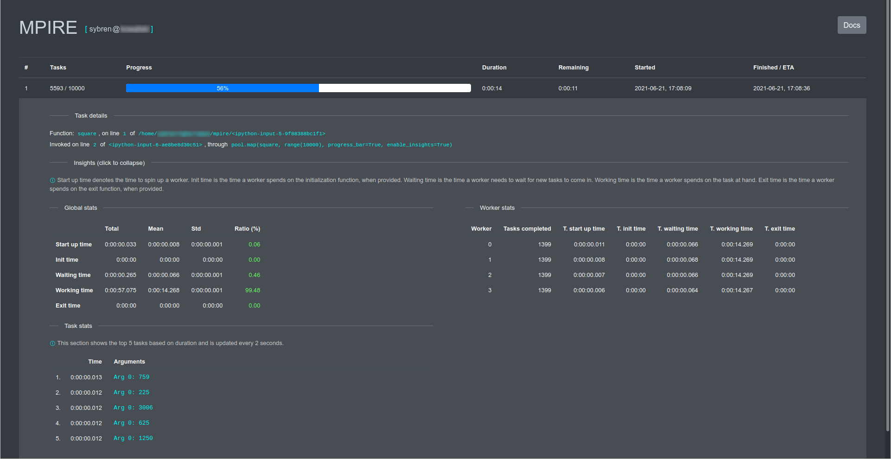

Dashboard¶
The dashboard allows you to see progress information from a browser. This is convenient when running scripts in a notebook or screen, if you want to share the progress information with others, or if you want to get real-time worker insight information.
The dashboard dependencies are not installed by default. See Dashboard for more information.
Starting the dashboard¶
You can start the dashboard programmatically:
from mpire.dashboard import start_dashboard
# Will return a dictionary with dashboard details
dashboard_details = start_dashboard()
print(dashboard_details)
which will print:
{'dashboard_port_nr': 8080,
'manager_host': 'localhost',
'manager_port_nr': 8081}
This will start a dashboard on your local machine on port 8080. When the port is already in use MPIRE will try the next,
until it finds an unused one. In the rare case that no ports are available up to port 8099 the function will raise an
OSError. By default, MPIRE tries ports 8080-8100. You can override this range by passing on a custom range object:
dashboard_details = start_dashboard(range(9000, 9100))
The returned dictionary contains the port number that is ultimately chosen. It also contains information on how to connect to this dashboard remotely.
Another way of starting a dashboard is by using the bash script (this doesn’t work on Windows!):
$ mpire-dashboard
This will start a dashboard with the connection details printed on screen. It will say something like:
Starting MPIRE dashboard...
MPIRE dashboard started on http://localhost:8080
Server is listening on localhost:8098
--------------------------------------------------
The server part corresponds to the manager_host and manager_port_nr from the dictionary returned by
mpire.dashboard.start_dashboard(). Similarly to earlier, a custom port range can be provided:
$ mpire-dashboard --port-range 9000-9100
The benefit of starting a dashboard this way is that your dashboard keeps running in case of errors in your script. You will be able to see what the error was, when it occurred and where it occurred in your code.
Connecting to an existing dashboard¶
If you have started a dashboard elsewhere, you can connect to it using:
from mpire.dashboard import connect_to_dashboard
connect_to_dashboard(manager_port_nr=8081, manager_host='localhost')
Make sure you use the manager_port_nr, not the dashboard_port_nr in the examples above.
You can connect to an existing dashboard on the same, but also on a remote machine (if the ports are open). If
manager_host is omitted it will fall back to using 'localhost'.
Using the dashboard¶
Once connected to a dashboard you don’t need to change anything to your code. When you have enabled the use of
a progress bar in your map call the progress bar will automatically register itself to the dashboard server and show
up, like here:
from mpire import WorkerPool
from mpire.dashboard import connect_to_dashboard
connect_to_dashboard(8099)
def square(x):
import time
time.sleep(0.01) # To be able to show progress
return x * x
with WorkerPool(4) as pool:
pool.map(square, range(10000), progress_bar=True)
This will show something like:
{kind=link}
You can click on a progress bar row to view details about the function that is called (which has already been done in the screenshot above).
It will let you know when a KeyboardInterrupt signal was send to the running process:
{kind=link}
or show the traceback information in case of an exception:
{kind=link}
In case you have enabled Worker insights these insights will be shown real-time in the dashboard:
{kind=link}
Click on the Insights (click to expand/collapse) to either expand or collapse the insight details.
The dashboard will refresh automatically every 0.5 seconds.